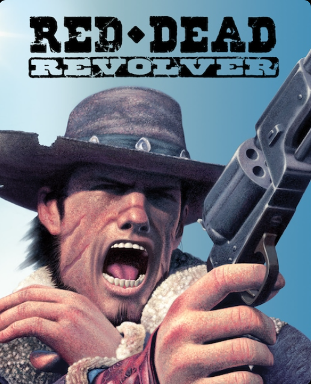

Red Dead
Revolver
Red Dead Revolver segue a história de Red Harlow, um caçador de recompensas que busca vingar a morte de seus pais. O jogo se passa na década de 1880 e apresenta uma narrativa linear, onde Red Harlow enfrenta diversos desafios e inimigos ao longo de sua jornada.
